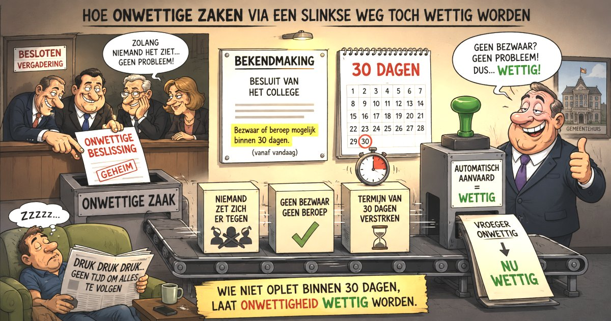

De beslissing om de gemeentelijke kinderopvang af te schaffen, is asociaal. In 2026 verwacht je dat een lokaal bestuur investeert in jonge gezinnen, niet dat het zich terugtrekt uit een kerntaak. Het voelt als een stap terug naar een tijd waarin werkende ouders het maar zelf moesten uitzoeken en opvang een gunst was in plaats van een basisvoorziening.
Op de gemeenteraad werd de indruk gewekt dat de hervorming van minister Caroline Gennez de oorzaak is van deze beslissing. Dat is een te gemakkelijke voorstelling van zaken. De hervorming heeft juist als doel onthaalouders beter te vergoeden en beter sociaal te beschermen. Dat brengt voor organisatoren hogere kosten mee, maar het blijft een beleidskeuze van een gemeentebestuur om die investering al dan niet te doen.
De boodschap die het gemeentebestuur hiermee geeft aan de 52 betrokken kinderen en hun ouders, is volgens mij bijzonder hard: "Werkende ouders van Adinkerke en De Panne, trek uw plan met uw baby of peuter." Dat is geen visie op gezinsbeleid die een normale inwoner verwacht van een lokaal bestuur anno 2026.
Kinderopvang is geen luxe. Ze maakt het mogelijk dat ouders kunnen werken, ondersteunt de ontwikkeling van jonge kinderen en is een essentiële maatschappelijke dienstverlening. Een gemeente die deze dienstverlening afbouwt, verschuift de verantwoordelijkheid volledig naar gezinnen. Terug naar de tijd van moeder aan de haard.
P.S. Zelden heb ik een leidinggevende ambtenaar zo bereid gezien om publiek een beslissing te verdedigen die niet alleen haar eigen functie maar ook die van haar volledige team op de helling zet. Ook dat is opmerkelijk.
Beroepschrift